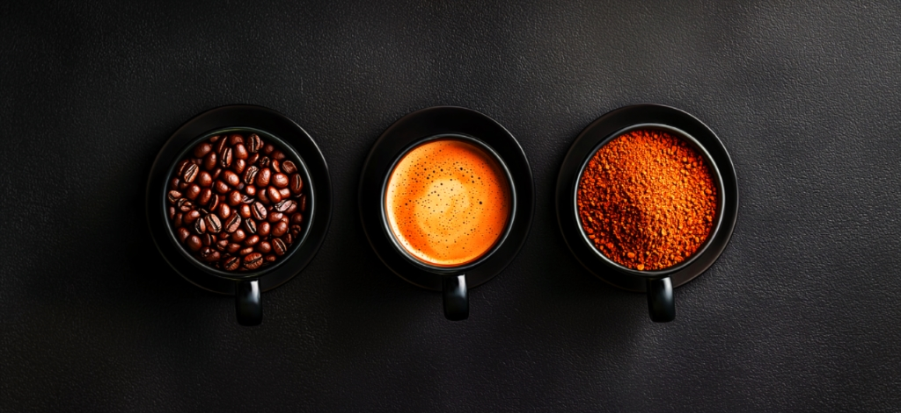

Mastering the Art of
Coffee Sales Forecasting
Sophisticated Time Series Analysis for the Perfect Brew.
ARIMA, SARIMA, and SARIMAX insights at your fingertips.

Key Insights
Seasonal Patterns
Fall and winter months show the highest coffee sales, with peaks in October and February.
Peak Hours
The morning rush between 10-12 AM consistently shows the highest transaction volumes.
Popular Drinks
Latte generates the highest revenue despite Americano with Milk being the most purchased.
Growth Trend
Overall sales show a positive trend with predictable weekly and seasonal variations.
The Analysis Journey
Raw Dataset Time Series
Your coffee shop sales data is transformed into a clean, structured time series.
Visual Exploratory Analysis
Hourly peaks, weekly habits, seasonal trends — all revealed through clean charts.
Forecasting Models
ARIMA, SARIMA, and SARIMAX models predict when the coffee machine works hardest!
Sample Dataset
Below is a sample of the chronological coffee sales data used in this analysis:
| Date | Time | Type | Amount | Coffee |
|---|